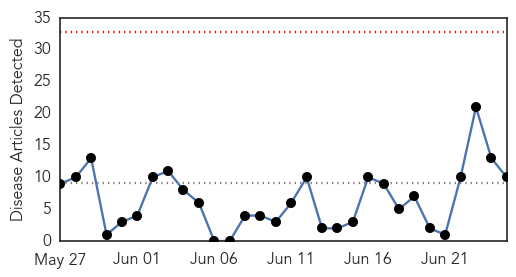
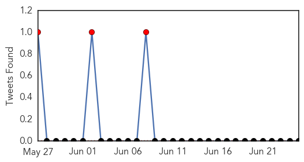
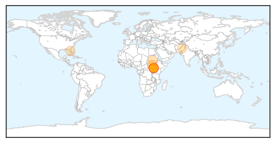
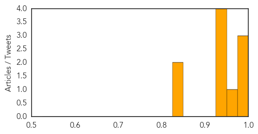
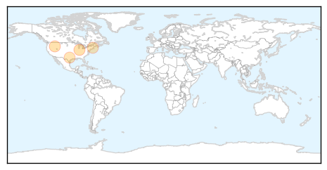

Cholera
30-Day Web Trend
0 alerts, 0 warnings

30-Day Twitter Trend
6 alerts, 0 warnings

Article Locations
Article Confidences
Top Articles:
- 0.997
- News Stories
- 0.996
- S’Sudan government declares cholera outbreak
- 0.992
- Ugandan traders to Juba cautioned over cholera
- 0.955
- South Sudan children at risk from cholera outbreak, warns UNICEF
- 0.934
- Cholera outbreak in South Sudan is wake up call to government and aid agencies
- 0.933
- Oxfam deeply concerned about cholera outbreak as crisis worsens in South Sudan
- 0.930
- Cholera outbreak in South Sudan is wake up call to government
- 0.930
- Oxfam deeply concerned about cholera outbreak as crisis worsens in South Sudan
- 0.838
- Mismanaged? Upper Dir in grips of cholera outbreak
- 0.827
- A therapeutic view of disease from space
Top Tweets:
-
No tweets found for Jun 25, 2015
West Nile Virus
30-Day Web Trend
1 alerts, 3 warnings

30-Day Twitter Trend
3 alerts, 0 warnings

Article Locations
Article Confidences

Top Articles:
Top Tweets:
-
No tweets found for Jun 25, 2015